LA MIA STORIA, UN PAIO ALLA VOLTA
Questa pagina non è un catalogo. È un racconto. Qui ho raccolto tutte le sneakers che ho avuto nel corso degli anni, dai primi modelli che mi hanno fatto innamorare di questo mondo, fino alle ultime uscite che ho avuto la fortuna di prendere. Ogni scarpa qui sotto rappresenta un momento, una fase, un'emozione. Alcune sono arrivate per caso, altre dopo settimane di attesa, raffle perse e restock inaspettati. Alcune le ho tenute per anni, altre le ho scambiate o rivendute… ma tutte hanno lasciato un segno. Le ho ordinate cronologicamente, partendo dai primi passi che ho fatto in questo mondo. Non è solo una collezione: è un pezzo di me.
Yeezy Foam
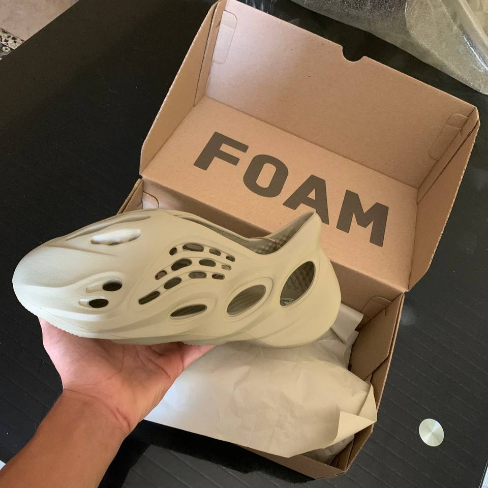
Questo è stato il primo paio che ho acquistato pensando al resell. L’ho presa al prezzo retail durante lo Yeezy Day, e proprio il costo più accessibile, circa 90€ rispetto ai 130-230€ di media delle altre sneakers, questo l'ha resa la scelta perfetta per iniziare davvero. La comprai con un amico: volevamo buttarci in questo mondo insieme, dividerci la fatica, il rischio… e anche la perdita, se le cose non fossero andate bene. Era il nostro modo di cominciare con la testa, ma anche col cuore. Questa Foam RNNR non è solo una Yeezy: è il simbolo del mio inizio. Il momento in cui ho smesso di guardare da fuori, e ho deciso di provarci davvero.
Jordan 4 Red Cement

Durante lo SNKRS Day, dopo ore passate a controllare l’app sperando in uno shock drop… finalmente arrivò. La Jordan 4 "Red Cement" fu la sorpresa della giornata. Un mix perfetto di storia e novità: pelle bianca premium, dettagli in rosso cementizio e lo stile intramontabile della silhouette Jordan 4. Ma questa non è solo una scarpa: è la prima che acquistai individualmente per rivenderla. Un punto di partenza, il primo passo concreto in questo mondo. Un pezzo speciale, carico di significato, che segna l’inizio di un percorso.
Jordan 5 AMM Dawn
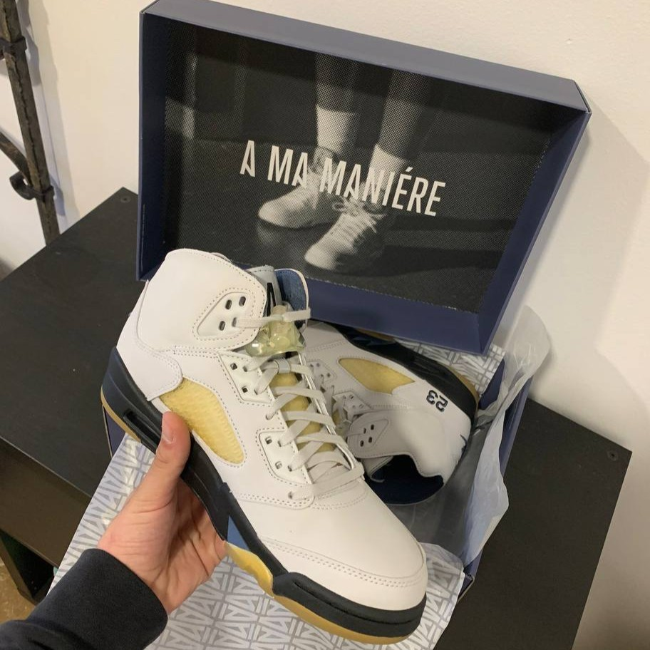
Dopo la Red Cement, sentivo il bisogno di qualcosa di diverso. È arrivata la Jordan 5 Dawn, una scarpa che unisce la raffinatezza A Ma Maniére con il carattere della silhouette AJ5. Suede grigio, dettagli azzurri, costruzione premium e una presenza silenziosa ma fortissima. Non l’ho presa solo per rivendere. L’ho scelta perché parlava un linguaggio più maturo, più consapevole. Una scarpa che segna un passaggio: da collezionista curioso a qualcuno che sa cosa cerca.
Jordan 1 High Taxi
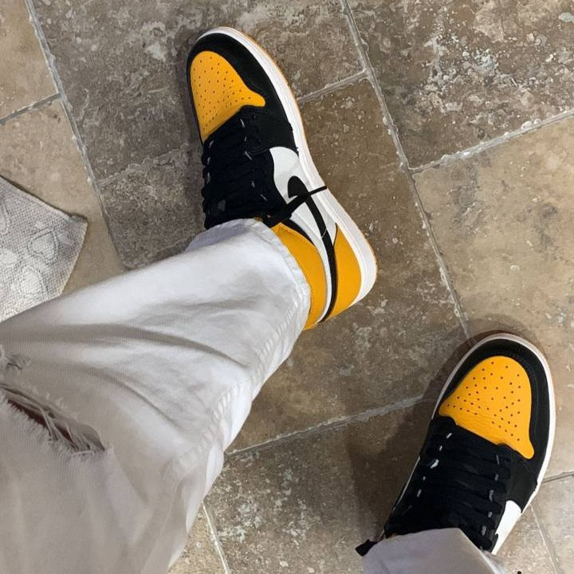
La "Taxi" è stata la prima scarpa limitata che ho comprato per me, davvero personale. Non un pezzo da vetrina o per rivendere, ma un acquisto fatto con il cuore. Il classico design della Jordan 1 con il suo contrasto nero e giallo acceso è un’icona senza tempo. La “Taxi” ha quel mix di grinta e stile che non passa mai inosservato. Prenderla è stato un passo importante, un modo per dire: questa è la mia passione, senza compromessi.
Kobe 4 Gift of Mamba
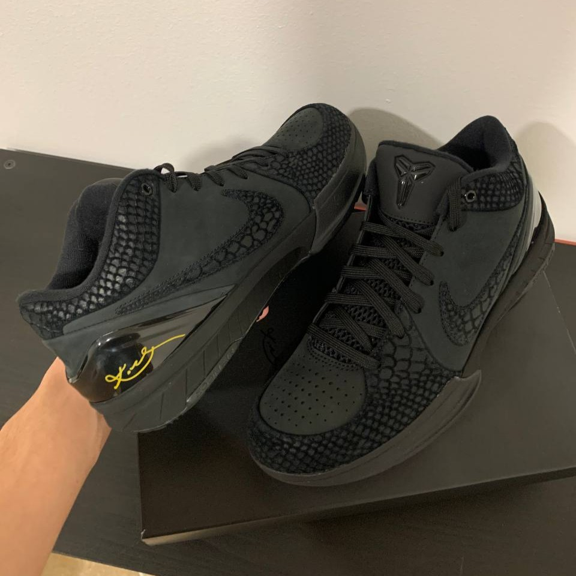
Dopo la Jordan 5 Dawn, è arrivata una scarpa che non ha bisogno di presentazioni. La Kobe 4 "Gift of Mamba" è un tributo potente, silenzioso e rispettoso. Total black, finiture premium, dettagli dorati. Eleganza e intensità, come Kobe sul parquet. Questa volta non c’era hype da inseguire. C’era solo il desiderio di avere un pezzo che raccontasse qualcosa di vero. Per me, rappresenta rispetto. Verso chi ha lasciato un segno che va oltre il gioco. Un regalo, come dice il nome, che ho voluto ricevere e conservare, più che rivendere.
Jordan 4 Bred Reimagined
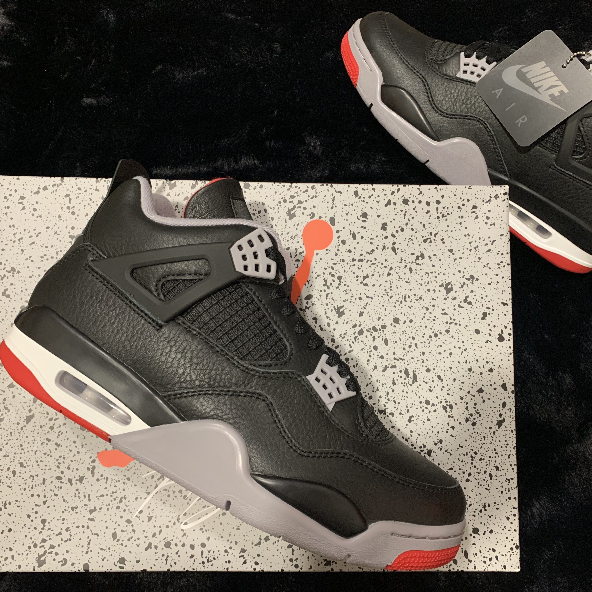
Dopo la “Taxi” è arrivata la Jordan 4 Bred Reimagined, una scarpa che all’inizio aveva un hype pazzesco. Tutti ne parlavano, tutti la volevano. Poi, stranamente, quell’entusiasmo è svanito. Nonostante tutto, la qualità è fuori dal comune: materiali premium, dettagli curatissimi e un design che rende omaggio alla classica Bred ma con un tocco moderno. Per me resta una gemma sottovalutata, perfetta per chi cerca stile e sostanza senza seguire solo le mode del momento.
Jordan 1 Low Trophy Room
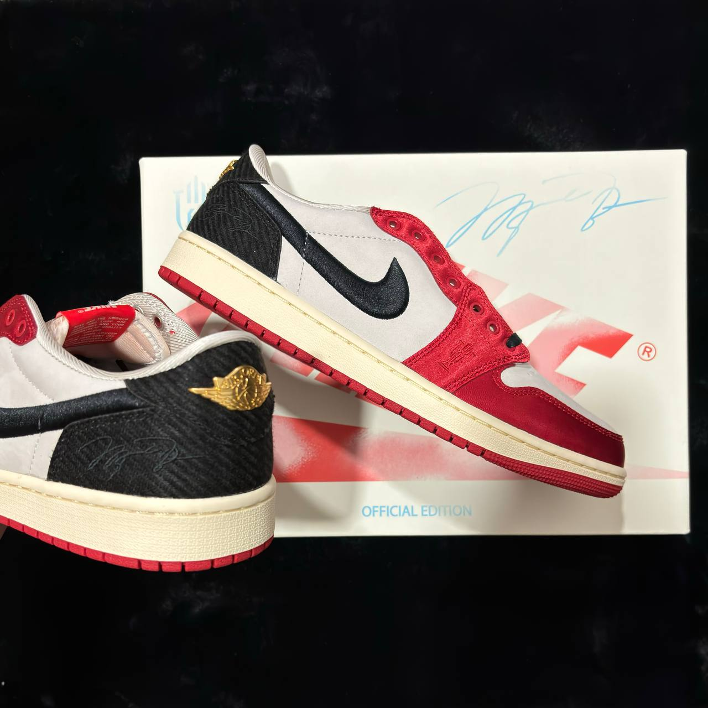
Dopo la Bred Reimagined, è arrivata la Jordan 1 Low Trophy Room, una scarpa che ho preso principalmente per rivendere. Una delle più profittevoli che abbia mai avuto. Design elegante, colori puliti e la firma di Trophy Room che la rende unica. Non solo un pezzo da collezione, ma anche un vero affare. Un acquisto intelligente che ha dato i suoi frutti, dimostrando che nel mondo delle sneakers, a volte, conviene anche guardare al business.
Dunk Low Sb Pastoral Print
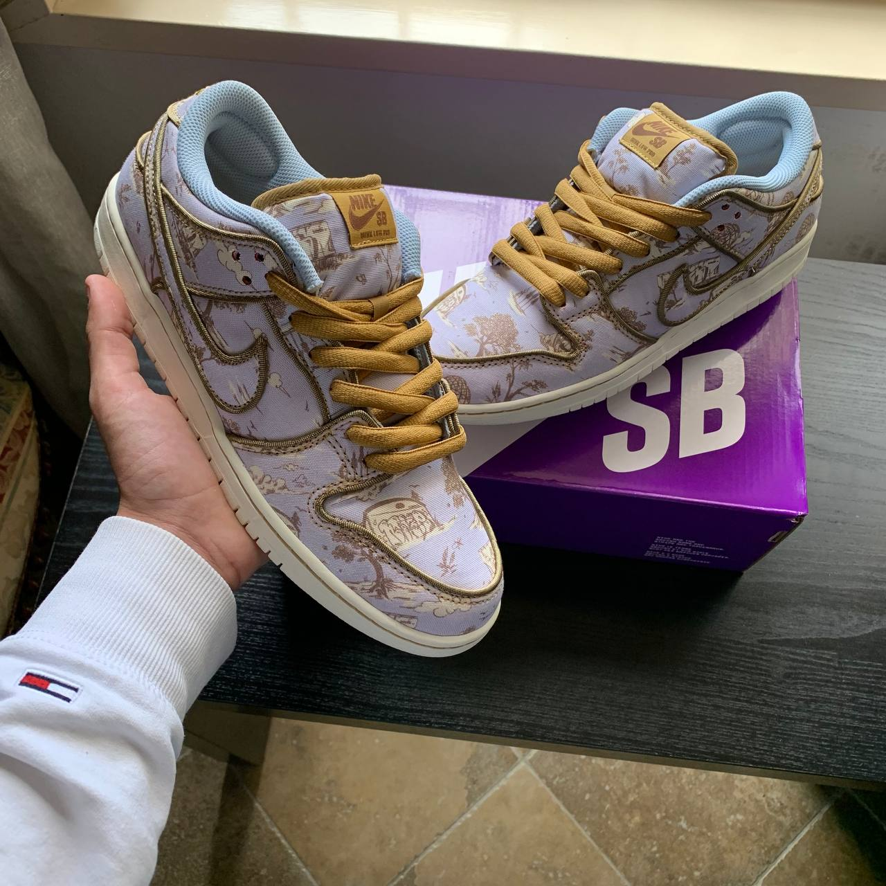
Dopo tante scarpe da collezione e rivendita, la Dunk SB Pastoral Print è stata una scelta completamente personale. Non una hype drop, non un investimento, ma qualcosa che parlava al mio stile e al mio gusto. Il pattern floreale su base chiara la rende unica e fuori dagli schemi. Una sneaker che si distingue per creatività e carattere, perfetta per chi ama andare controcorrente senza perdere eleganza. Questa scarpa racconta di un lato più libero e creativo della mia passione, quella parte di me che non segue solo mode ma sceglie ciò che sente davvero.

Quello che molti non sanno è che sotto quel pattern c’è un sorprendente dettaglio in camoscio rosso nascosto, un tocco di grinta e originalità che ho scelto di far emergere tagliando la scarpa, rivelando così un’anima nascosta che pochi possono vedere. Questa scarpa racconta di un lato più libero e creativo della mia passione, quella parte di me che non segue solo mode ma sceglie ciò che sente davvero.
Dunk Low SB Chicago
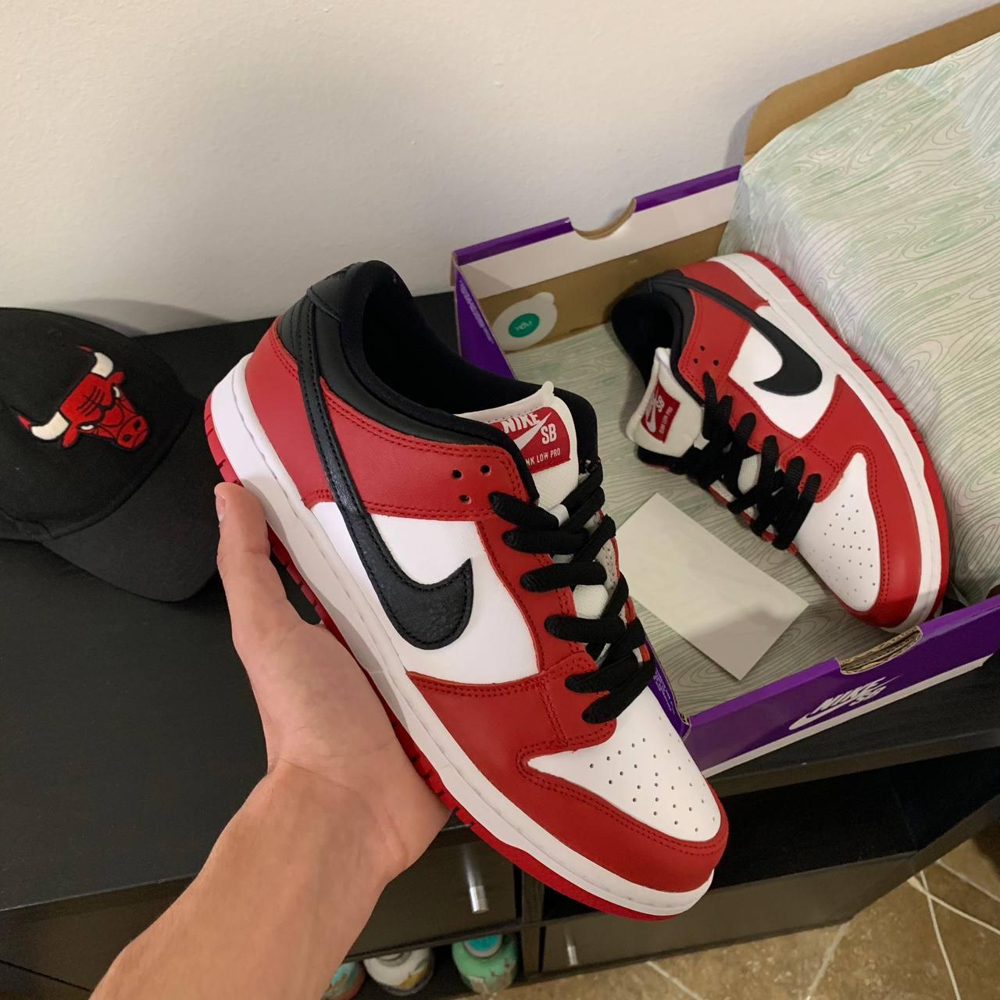
La Dunk SB Chicago è stata un vero colpo, un’icona che unisce storia e stile in un mix perfetto. Il classico rosso, bianco e nero della città del vento la rende immediatamente riconoscibile e amatissima. Non solo una sneaker, ma un pezzo di cultura sneakerhead. Per me è stata una scelta che non potevo lasciarmi scappare, un must-have da avere e mostrare con orgoglio. Questa scarpa parla di passione, radici e stile senza tempo.
Dunk Low Sb Coconut Milk

La Dunk SB Coconut Milk è uscita per San Valentino e si distingue per la base chiara con dettagli rossi che le donano un carattere unico e romantico. Un mix perfetto tra stile e occasione speciale, un modello che ha fatto girare la testa a molti e che non potevo farmi sfuggire.
Dunk High Wu-Tang
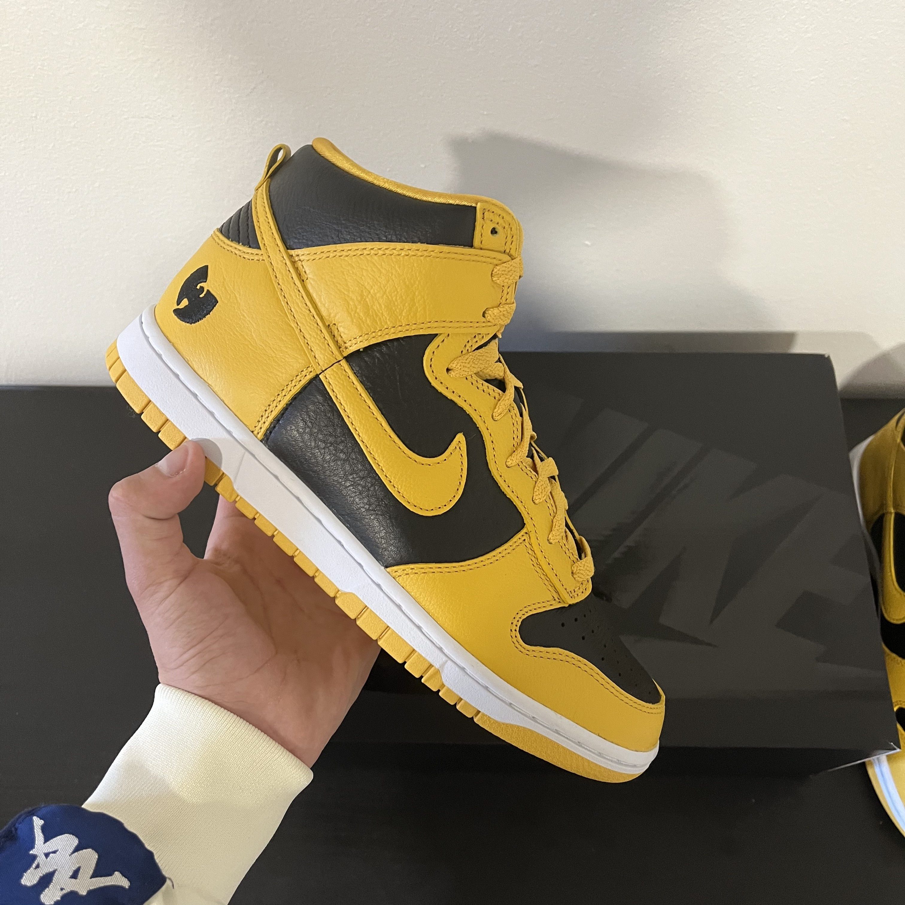
Le Dunk High Wu-Tang sono un pezzo cult per ogni sneakerhead. I colori giallo e nero richiamano il leggendario Wu-Tang Clan, con il logo ricamato sul tallone che le rende ancora più iconiche. Un mix di musica, cultura urbana e design audace, perfetta per chi vuole distinguersi con stile. Un modello che non passa inosservato e che ho voluto avere proprio per il suo peso culturale e visivo.
Dunk Low SB Black Gum

Una delle SB più versatili mai uscite. Tomaia in nabuk nero, Swoosh bianco e suola gum: pochi elementi, ma combinati alla perfezione. La Black Gum è la classica scarpa che puoi mettere sempre, ma che mantiene comunque carattere. Pulita, bilanciata, senza tempo.
Jordan 1 Low Velvet Brown
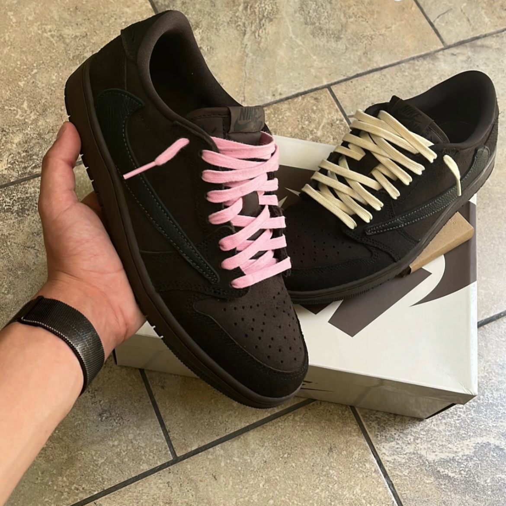
Questa è il pezzo forte della collezione personale. La Jordan 1 Low "Velvet Brown" in collaborazione con Travis Scott non è solo una scarpa, è un simbolo. Design ricercato, materiali di livello altissimo e un equilibrio cromatico che cattura subito lo sguardo: suede marrone scuro, Swoosh reverse nero in pelle e dettagli in pelle nera che ne completano l’estetica. Ma il vero tocco che la rende unica sono i lacci rosa, un contrasto audace che spezza l’oscurità della scarpa e le dà carattere. Non c’è nulla fuori posto. Ogni dettaglio è pensato, ogni texture parla. È una scarpa che non urla, ma si fa notare. Elegante, destrutturata, eppure decisa. Ho scelto di tenerla perché rappresenta perfettamente quel confine sottile tra hype e gusto personale, tra il collezionismo e l’identità. Una sneaker che, più che indossata, va vissuta. E meritava un posto fisso nella mia rotazione.
Jordan 1 High UNC Reimagined
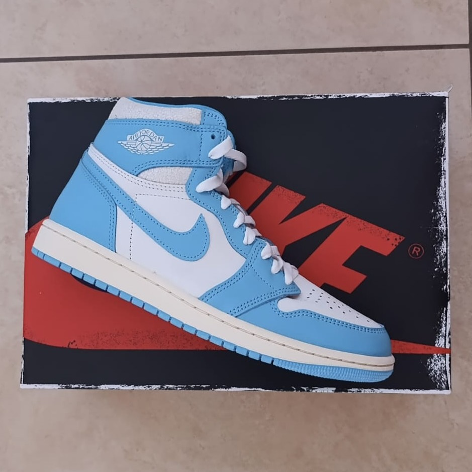
Un grande classico rivisitato in chiave premium. La Jordan 1 UNC Reimagined riprende i colori iconici dell’università di Michael Jordan, ma lo fa con materiali e dettagli da livello alto: tomaia in suede azzurro, pelle bianca morbida e finiture che danno un tocco vintage ma pulito. Una scarpa che unisce storia e attualità, perfetta per chi cerca qualcosa di speciale senza uscire troppo dal classico. Raffinata, fresca, e con un’identità forte.